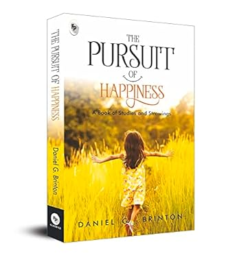

Latest Reviews
Here, There and Everywhere
Author: SUDHA MURTY
Highlights: A good piece of literature must use the right mix
of reality and imagination. Experience, observation, introspection:
these senses must be developed consciously.
-SUDHA MURTY
Review: Sudha Murty's "Here, There and Everywhere" is a delightful collection of stories that capture the essence of her experiences and observations. Each story is crafted with simplicity, yet they carry profound messages about life, relationships, and values. Murty's narrative style is engaging and relatable, making it easy for readers to connect with her tales. The book offers a mix of humor, wisdom, and heartfelt moments that leave a lasting impression. It is a perfect read for anyone looking for inspiration and insight into the everyday life through the eyes of a remarkable storyteller.
Rating: ★★★★☆
Get Here

The Pursuit of Happiness
Author:Daniel G. Brinton
Review: "The Pursuit of Happiness: A Book of Studies and Strowings" by Daniel G. Brinton is a profound exploration into the philosophy and psychology of happiness. Brinton delves into various aspects of what it means to be happy, examining historical, cultural, and personal dimensions. His scholarly yet accessible approach makes complex ideas relatable and thought-provoking. The book is a treasure trove of insights, drawing on a rich tapestry of sources and offering practical wisdom for anyone interested in the deeper questions of life. It is a compelling read that invites reflection and self-discovery, making it a valuable addition to the library of those who seek a deeper understanding of happiness.
Rating: ★★★★☆
Get Here
Chicken Soup for the Soul
Authors: Jack Canfield and Mark Victor Hansen
Rating: ★★★☆☆
Review: "Chicken Soup for the Soul" by Jack Canfield and Mark Victor Hansen is a heartwarming collection of true stories that inspire and uplift the reader. Each story in this anthology is carefully selected to touch on universal themes of love, kindness, perseverance, and faith. The simplicity and honesty of these narratives make them relatable and profoundly moving. Readers will find comfort and encouragement in the shared human experiences detailed in this book. "Chicken Soup for the Soul" is an enduring classic that continues to resonate with readers seeking hope and positivity in their lives. It is a perfect gift for anyone needing a dose of inspiration and a reminder of the goodness in the world.
Get Here
The Alchemist
Author: Paulo Coelho
Rating: ★★★★☆
Review: "The Alchemist" by Paulo Coelho is a timeless masterpiece that tells the enchanting story of Santiago, a shepherd boy who dreams of discovering a worldly treasure. His journey takes him from his homeland in Spain to the Egyptian desert, where he meets a series of characters who guide him toward his goal. Coelho's simple yet profound storytelling weaves a rich tapestry of wisdom, adventure, and self-discovery. The novel explores universal themes of personal legend, destiny, and the transformative power of following one's dreams. With its blend of magic, mysticism, and practicality, "The Alchemist" inspires readers to listen to their hearts and pursue their passions. It is a beautifully written and deeply philosophical book that continues to touch the lives of millions around the world.
Get Here
The Godfather
Author: Mario Puzo
Rating: ★★★☆☆
Review: "The Godfather" by Mario Puzo is a gripping novel that delves deep into the world of organized crime, revealing the intricate web of loyalty, power, and family that defines the Mafia. The story centers around the Corleone family, led by the formidable Don Vito Corleone, and his sons as they navigate the treacherous landscape of New York's underworld. Puzo's storytelling is both compelling and immersive, capturing the reader with rich character development and intense drama. The novel brilliantly explores themes of power, revenge, and tradition, while providing a stark portrayal of the moral ambiguities within the Mafia. "The Godfather" is a masterful tale of ambition and betrayal, and it remains a seminal work in the crime fiction genre, influencing countless adaptations and earning its place as a classic.
Get Here
Atomic Habits
Author: James Clear
Rating: ★★★★★
Review: In this ground-breaking book, Clears reveals exactly how these minuscule changes can grow into such life-altering outcomes. He uncovers a handful of simple life hacks (the forgotten art of Habit Stacking, the unexpected power of the Two Minute Rule, or the trick to entering the Goldilocks Zone), and delves into cutting-edge psychology and neuroscience to explain why they matter. Along the way, he tells inspiring stories of Olympic gold medalists, leading CEOs, and distinguished scientists who have used the science of tiny habits to stay productive, motivated, and happy.
Get Here

The Power of Your Subconscious Mind
Author: Joseph Murphy
Rating: ★★★★★
Review: This remarkable book by Dr. Joseph Murphy, one of the pioneering voices of affirmative thinking, will unlock for you the truly staggering powers of your subconscious mind. Combining time-honored spiritual wisdom with cutting edge scientific research, Dr. Murphy explains how the subconscious mind influences every single thing that you do and how, by understanding it and learning to control its incredible force, you can improve the quality of your daily life.Everything, from the promotion that you wanted and the raise you think you deserve, to overcoming phobias and bad habits and strengthening interpersonal relationships, the Power of Your Subconscious Mind will open a world of happiness, success, prosperity and peace for you. It will change your life and your world by changing your beliefs.
Get Here
Do Epic Shit
Author: Ankur Warikoo
Rating: ★★★★★
Review: Ankur Warikoo is an entrepreneur and content creator whose deep, witty and brutally honest thoughts on success and failure, money and investing, self-awareness and personal relationships have made him one of India’s top personal brands. In his first book, Ankur puts together the key ideas that have fuelled his journey – one that began with him wanting to be a space engineer and ended with him creating content that has been seen and read by millions. His thoughts range from the importance of creating habits for long-term success to the foundations of money management, from embracing and accepting failure to the real truth about learning empathy. This is a book to be read, and reread, a book whose lines you will underline and think about again and again, a book you will give your family and friends and strangers. Ankur hopes for this book to become the most gifted book ever!
Get Here

To Kill a Mockingbird
Author: Harper Lee
Rating: ★★★★☆
Review: The unforgettable novel of a childhood in a sleepy Southern town and the crisis of conscience that rocked it. "To Kill A Mockingbird" became both an instant bestseller and a critical success when it was first published in 1960. It went on to win the Pulitzer Prize in 1961 and was later made into an Academy Award-winning film, also a classic.
Compassionate, dramatic, and deeply moving, "To Kill A Mockingbird" takes readers to the roots of human behavior - to innocence and experience, kindness and cruelty, love and hatred, humor and pathos. Now with over 18 million copies in print and translated into forty languages, this regional story by a young Alabama woman claims universal appeal. Harper Lee always considered her book to be a simple love story. Today it is regarded as a masterpiece of American literature.
Get Here
About Us
We are passionate about books and aim to provide thoughtful and engaging reviews.
"Books are a uniquely portable magic." - Stephen King
"There is more treasure in books than in all the pirate's loot on Treasure Island." - Walt Disney
"A reader lives a thousand lives before he dies." - Jean Paul
"The more that you read, the more things you will know. The more that you learn, the more places you'll go." - Dr. Seuss